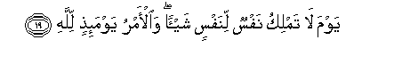

Sacred Texts Islam Index
Hypertext Qur'an Unicode Palmer Pickthall Yusuf Ali English Rodwell
Sūra LXXXII.: Infiṭār, or The Cleaving Asunder. Index
Previous Next

The Holy Quran, tr. by Yusuf Ali, [1934], at sacred-texts.com
Sūra LXXXII.: Infiṭār, or The Cleaving Asunder.
Section 1
1. When the Sky
Is cleft asunder;
2. Wa-itha alkawakibu intatharat
2. When the Stars
Are scattered;
3. When the Oceans
Are suffered to burst forth;
4. Wa-itha alqubooru buAAthirat
4. And when the Graves
Are turned upside down;—
5. AAalimat nafsun ma qaddamat waakhkharat
5. (Then) shall each soul know
What it hath sent forward
And (what it hath) kept back.
6. Ya ayyuha al-insanu ma gharraka birabbika alkareemi
6. O man! what has
Seduced thee from
Thy Lord Most Beneficent?—
7. Allathee khalaqaka fasawwaka faAAadalaka
7. Him Who created thee.
Fashioned thee in due proportion
And gave thee a just bias;
8. Fee ayyi sooratin ma shaa rakkabaka
8. In whatever Form He wills,
Does He put thee together.
9. Kalla bal tukaththiboona bialddeeni
9. Nay! but ye do
Reject Right and Judgment!
10. Wa-inna AAalaykum lahafitheena
10. But verily over you
(Are appointed angels)
To protect you,—
11. Kind and honourable,—
Writing down (your deeds):
12. YaAAlamoona ma tafAAaloona
12. They know (and understand)
All that ye do.
13. Inna al-abrara lafee naAAeemin
13. As for the Righteous,
They will be in Bliss;
14. Wa-inna alfujjara lafee jaheemin
14. And the Wicked—
They will be in the Fire,
15. Which they will enter
On the Day of Judgment,
16. Wama hum AAanha bigha-ibeena
16. And they will not be
Able to keep away therefrom.
17. Wama adraka ma yawmu alddeeni
17. And what will explain
To thee what the Day
Of Judgment is?
18. Thumma ma adraka ma yawmu alddeeni
18. Again, what will explain
To thee what the Day
Of Judgment is?

19. Yawma la tamliku nafsun linafsin shay-an waal-amru yawma-ithin lillahi
19. (It will be) the Day
When no soul shall have
Power (to do) aught
For another
For the Command, that Day,
Will be (wholly) with God.